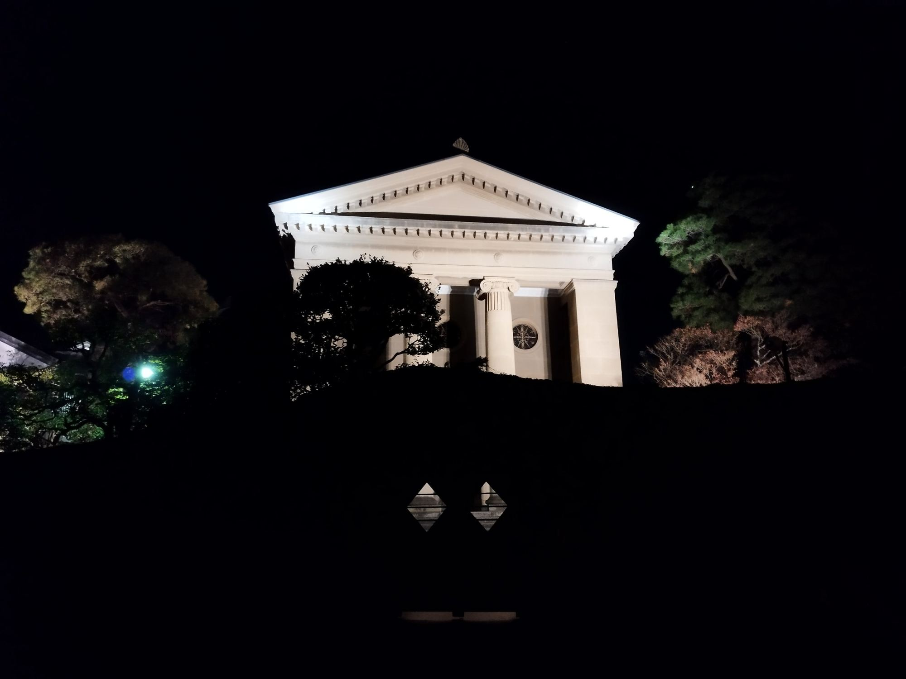

Culture in Okayama
Old things, still in use.

After closing34°39′N 133°55′E
What to see.
Tap to open.
Black, and known as the Crow Castle. The garden is just across the river.
A canal, willows, white walls. Stay until the crowds leave.
Opened in 1930. Japan's first museum of Western art, beside the canal.
Pottery with no glaze, fired for days in a wood kiln. You can visit the workshops.
A copper refinery, left to become an art museum. On a very small island.
Japan's denim town. Try a pair.
A seventeenth-century school for ordinary people. Quiet, and well kept.